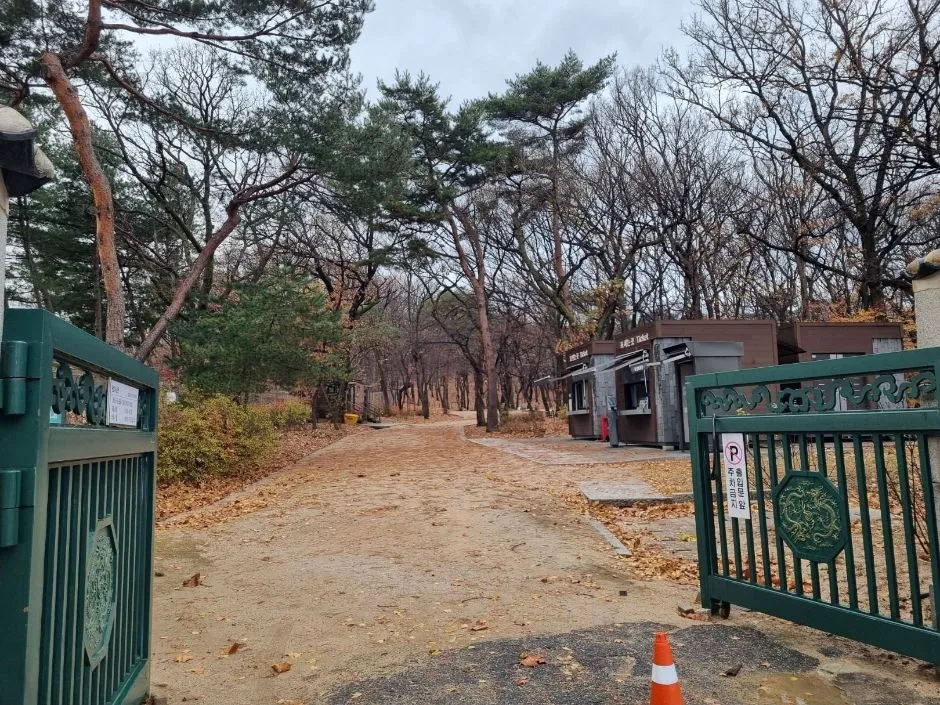
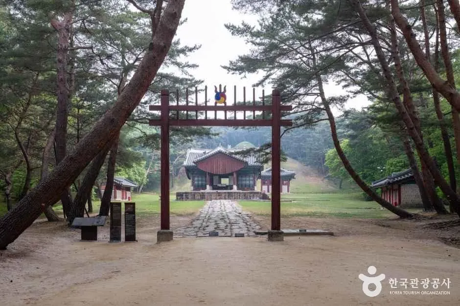
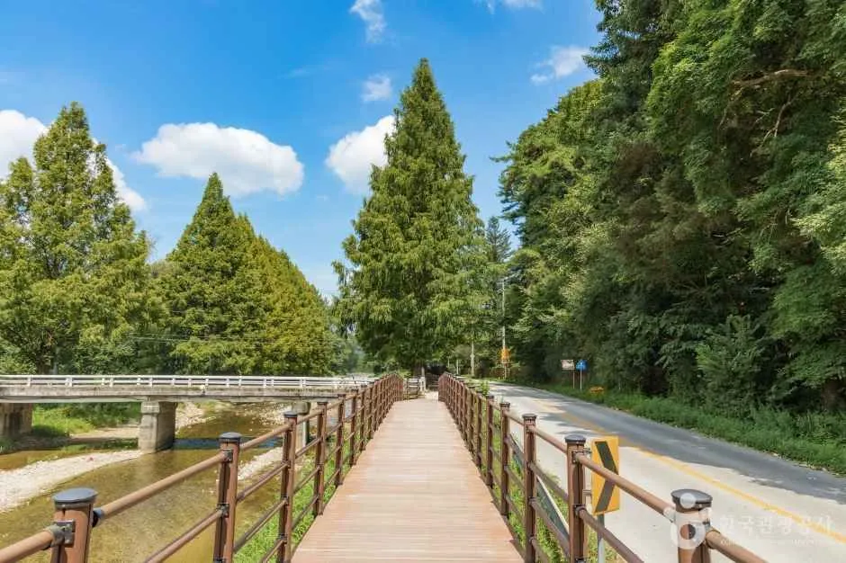
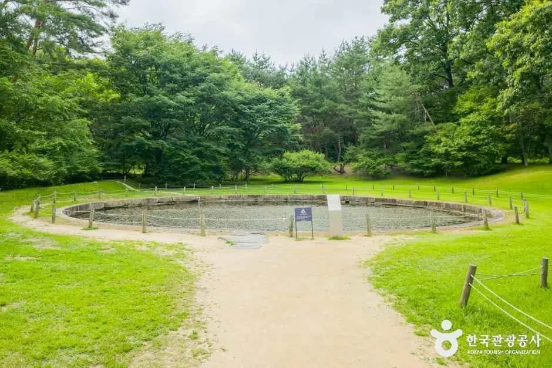
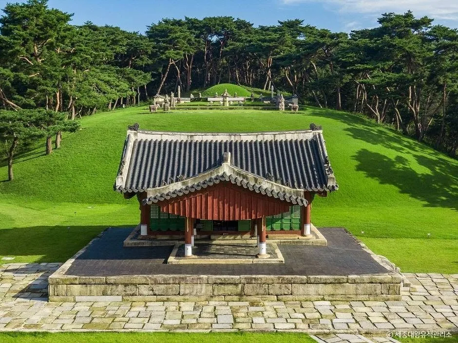
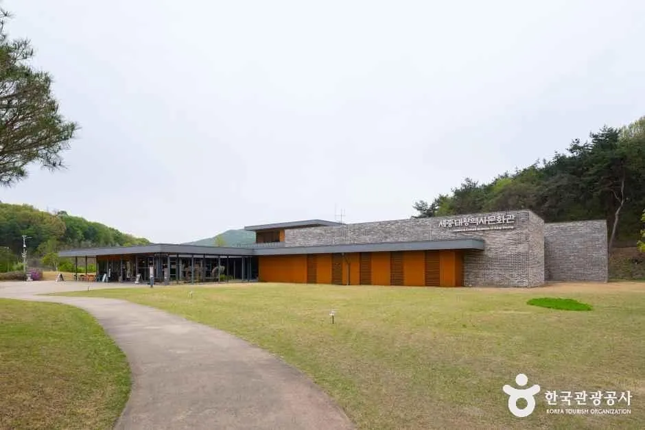
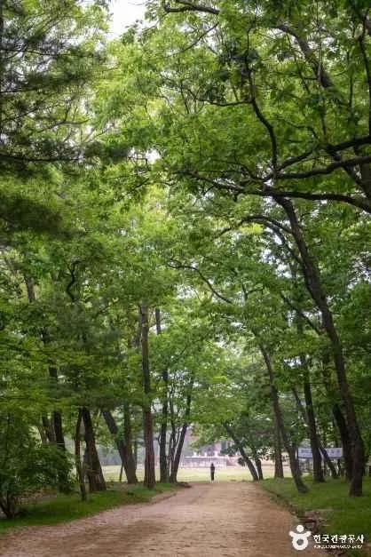
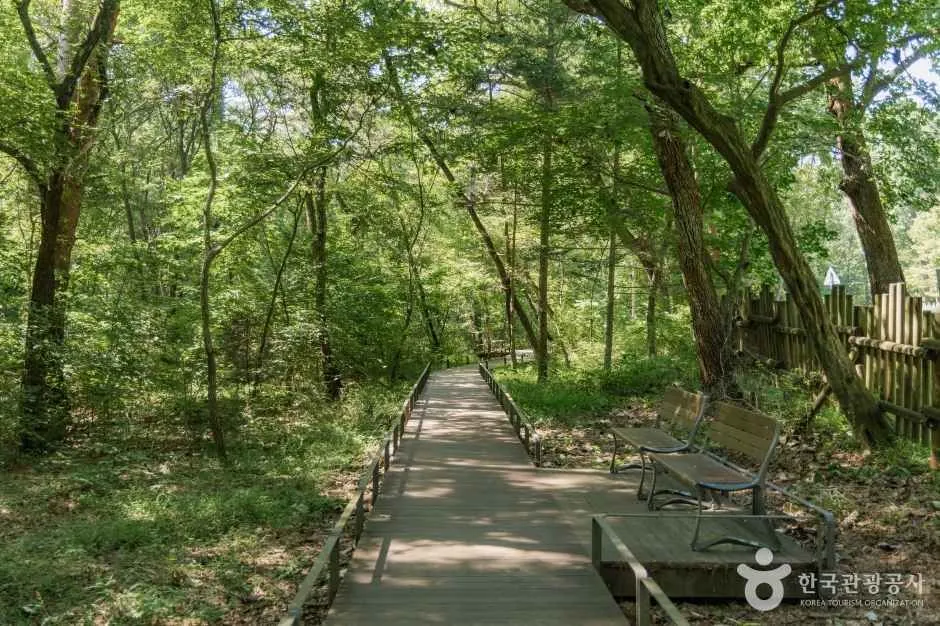

▲ 소나무 숲 사이 흙길 끝에 정자각이 보이는 왕릉 능역 풍경(촬영 장소는 확인 못 함) 사진=한국관광공사
단풍철에 조선왕릉 숲길을 걷고 싶은데, 9곳 중 어디로 차를 몰아야 할까. 국가유산청 궁능유적본부는 10월 1일부터 11월 29일까지 두 달간 조선왕릉 숲길 9곳, 총 19.04km를 개방한다. 서울 의릉 천장산 숲길을 포함해 구리·남양주·파주·화성·여주에 걸쳐 있고, 별도 신청 없이 각 왕릉의 관람 시간 안에 자유롭게 이용할 수 있다.
이 글은 아시아경제·뉴스1 등 보도와 궁능유적본부·조선왕릉 공식 누리집을 대조해 9개 구간, 시간표, 관람료, 자동차 접근 정보를 정리했다. 구간별 거리와 소요시간은 공개된 보도자료에서 확인하지 못했다 — 아래 표에도 '확인 못 함'으로 적었다.
1. 9곳 숲길 한눈에 — 어디가 열리나
개방 구간은 보도자료 기준으로 아래 9곳이다. 궁능유적본부는 2019년부터 매년 봄·가을 조선왕릉 숲길을 정기 개방해 왔다. 다만 보도에서는 구간별 길이·소요시간이 공개되지 않아, 이 표에는 확인된 명칭과 소재지, 성격만 실었다.
| # | 소재지 | 숲길 명칭 | 구간 거리·소요시간 |
|---|---|---|---|
| 1 | 구리 동구릉 | 휘릉~원릉 / 경릉~양묘장 | 확인 못 함 |
| 2 | 남양주 광릉 | 복자기나무 숲길 | 확인 못 함 |
| 3 | 남양주 사릉 | 능침 뒤 소나무길 | 확인 못 함 |
| 4 | 서울 태릉·강릉 | 태릉~강릉 | 확인 못 함 |
| 5 | 서울 의릉 | 천장산 숲길 | 확인 못 함 |
| 6 | 파주 장릉 | 능침 북쪽 숲길 | 확인 못 함 |
| 7 | 화성 융릉·건릉 | 융릉~건릉 숲길 | 확인 못 함 |
| 8 | 파주 삼릉 | 영릉~순릉 작은 연못, 공릉 능침 북측 숲길 | 확인 못 함 |
| 9 | 여주 영릉(세종)·영릉(효종) | 영릉 외곽 숲길 | 확인 못 함 |
9곳의 합계가 19.04km라는 것만 공식 수치다. 평균으로 나누면 곳당 약 2.1km지만, 구간마다 길이가 다를 수 있어 이 값은 참고용 계산일 뿐 실제 구간 길이가 아니다. 정확한 길이는 각 왕릉 관리소에 문의해야 한다.
▲ 소나무 숲 사이 흙길 끝에 정자각이 보이는 왕릉 능역 풍경(촬영 장소는 확인 못 함) 사진=한국관광공사
🔎 '의릉'과 '영릉' 표기 주의
일부 보도에는 여주가 '영릉과 영릉'으로 적혀 있다. 여주 세종대왕릉(英陵)과 효종릉(寧陵)의 한글 표기가 같아서 생긴 표기이며, 조선왕릉 공식 명칭도 '여주 영릉과 영릉'이다. 파주 삼릉 안의 '영릉(永陵)'과도 한자가 다르니, 내비게이션에는 '여주 영릉(세종대왕릉)'처럼 지명을 함께 넣는 것이 안전하다.
2. 시간표와 요금 — 숲길 시간이 왕릉 관람 시간과 다를 수 있다
발표된 숲길 개방 시간은 10월 09:00~17:00, 11월 09:00~16:30이고 월요일은 쉰다. 그런데 왕릉별 정규 관람 시간은 계절에 따라 더 길다. 예를 들어 의릉은 9~10월 09:00~18:00(매표 17:00까지), 11~1월 09:00~17:30(매표 16:30까지)이고, 동구릉은 9~10월 06:00~18:00, 11~1월 06:30~17:30이다. 숲길 구간의 시간표가 발표대로 더 짧게 적용되는지는 릉별로 다를 수 있어, 마지막 진입 시간은 출발 전에 관리소에 확인하는 것이 안전하다(확인 못 함).
| 구분 | 10월 | 11월 | 휴관 |
|---|---|---|---|
| 숲길 개방(발표) | 09:00~17:00 | 09:00~16:30 | 월요일 |
| 의릉 관람(정규) | 09:00~18:00 (매표 ~17:00) | 09:00~17:30 (매표 ~16:30) | 월요일 (공휴일과 겹치면 개방) |
| 동구릉 관람(정규) | 06:00~18:00 (매표 ~17:00) | 06:30~17:30 (매표 ~16:30) | 월요일 (공휴일과 겹치면 개방) |
| 항목 | 내용 |
|---|---|
| 의릉·동구릉 개인 | 성인(25~64세) 1,000원, 단체(10인 이상) 800원 |
| 무료 | 만 6세 이하, 만 7~24세 청소년, 만 65세 이상 (신분증 지참), 장애인·한복 착용자 등 |
| 문화가 있는 날 | 매월 마지막 수요일 무료 관람 — 10월 28일·11월 25일(수)이 해당 |
| 지역주민 | 해당 왕릉 소재 지역 주민 50% 할인 (증빙 필요) |
| 그 외 릉 | 조선왕릉 요금은 릉마다 다르며, 여주 영릉 성인은 500원(궁능유적본부 요금 안내)이다. 광릉 등은 개별 확인이 필요하다(확인 못 함) |
✅ 출발 전 체크
· 숲길은 별도 신청 없이 자유 이용이며, 보도에는 각 왕릉 관람 시간과 같다고 안내돼 있다 (입장권 구매 방식은 릉별 확인 못 함)
· 월요일 휴관이 공통이라, 주말 방문이 어렵다면 화~금 오전이 가장 여유로울 것으로 보인다(추정)
· 기상 악화 시 개방 시간·구간이 조정될 수 있다는 단서가 붙어 있다
3. 서울권 — 의릉 천장산 숲길과 태릉~강릉
서울에서 가장 가까운 두 곳은 성북구 의릉과 노원구 태릉·강릉이다. 의릉 '천장산 숲길'은 왕릉 주변 숲과 천장산의 자연환경이 이어지는 구간으로 소개됐다. 2025년 봄 개방 때는 '천장산~역사경관림 복원지' 구간으로 안내됐다. 태릉~강릉은 두 능 사이를 하나의 동선으로 잇는 구간이다.
| 항목 | 서울 의릉 | 서울 태릉·강릉 |
|---|---|---|
| 주소(내비) | 서울 성북구 화랑로32길 146-20 (석관동) | 서울 노원구 화랑로 681 (공릉동) |
| 숲길 | 천장산 숲길 | 태릉~강릉 |
| 관람 소요 | 능 관람 약 1시간(공식 안내) | 확인 못 함 |
| 문의 | 02-964-0579 | 02-972-0370 (중부지구관리소) |
| 주차장 규모·요금 | 확인 못 함 | 확인 못 함 |

▲ 태릉·강릉 능역의 입구 쪽 흙길과 소나무 숲. 한국관광공사 사진은 늦가을 무렵 모습이다 사진=한국관광공사
두 곳은 서울 안에 있어 도심 출발 부담이 적지만, 가을 주말에 붐빌 수 있다(추정). 주차 가능 대수와 요금은 공식 자료에서 확인하지 못했으므로 관리소 확인이 필요하다. 서울 외곽 왕릉의 가을 산책은 경복궁 야간관람 주차 기사처럼 도심 고궁 나들이와 묶는 것도 방법이다.
4. 경기 동북부 — 동구릉·광릉·사릉 (구리·남양주)
동구릉은 왕과 왕비 9위의 능이 모인 넓은 능역으로, 이번에 개방되는 구간은 휘릉~원릉과 경릉~양묘장이다. 2025년 봄에는 '경릉~자연학습장'으로 안내돼, 같은 구간의 종점 명칭이 바뀌었다. 동구릉은 구리시 동구릉로 197에 있고 문의는 031-563-2909다.

▲ 소나무 사이로 참도와 홍살문, 정자각이 이어지는 동구릉 능역 풍경 사진=한국관광공사
광릉의 '복자기나무 숲길'은 복자기나무가 자리한 숲을 따라 이어진다. 복자기나무는 가을에 붉게 물드는 수종으로 알려져 있어, 단풍 시기에 맞추면 좋다. 다만 올해 단풍 절정 시점이 이 숲길에서 언제인지는 확인하지 못했다. 사릉은 능침 뒤편 소나무 숲을 통과하는 짧은 산책 코스다. 광릉 관리소 문의는 031-527-7105, 사릉은 031-573-8124다(동부지구관리소).
| 왕릉 | 숲길 | 주소 (공식 관광 정보) | 문의 |
|---|---|---|---|
| 구리 동구릉 | 휘릉~원릉, 경릉~양묘장 | 경기 구리시 동구릉로 197 | 031-563-2909 |
| 남양주 광릉 | 복자기나무 숲길 | 확인 못 함(관리소 문의) | 031-527-7105 |
| 남양주 사릉 | 능침 뒤 소나무길 | 경기 남양주시 진건읍 사릉로 180 | 031-573-8124 |

▲ 광릉숲 일대 산책로. 나무 데크 옆으로 침엽수가 늘어서 있다(광릉 복자기나무 숲길과는 다른 구간일 수 있음) 사진=한국관광공사
📸 사진 설명
위 광릉숲 사진은 한국관광공사가 '광릉숲길'로 올린 자료이며, 이번에 개방되는 '복자기나무 숲길' 구간을 그대로 촬영한 사진이라는 확인은 하지 못했다. 분위기 참고용으로만 봐 달라.
5. 경기 서부·남부 — 파주 장릉·삼릉, 화성 융건릉, 여주 영릉
화성 융릉~건릉 숲길은 사도세자(장조)와 정조의 능을 잇는 구간으로, 두 능을 이어 둘러보는 동선으로 소개됐다. 한국관광공사 정보상 주소는 화성시 효행로481번길 21(안녕동)이고, 문의는 서부지구관리소 031-222-0142다. 파주 삼릉은 공릉·순릉·영릉이 한 능역에 있는데, 이번에는 '영릉~순릉 작은 연못'과 '공릉 능침 북측 숲길'이 열린다(문의 031-941-4208). 파주 장릉은 능침 북쪽 숲길이다(문의 031-945-9242).

▲ 숲에 둘러싸인 융건릉 능역의 원형 연못 터 사진=한국관광공사
여주 영릉 외곽 숲길은 2025년 봄 8곳 명단에는 없었지만 가을 개방에는 2024·2025년에도 포함된 구간이다. 세종대왕릉과 효종릉이 함께 있는 곳으로, 각 능역을 둘러본 뒤 외곽 숲길까지 동선을 이어갈 수 있다. 주소는 여주시 세종대왕면 영릉로 269-10이다.

▲ 푸른 잔디와 소나무에 둘러싸인 여주 영릉 능역(한국관광공사 게시 사진) 사진=한국관광공사

▲ 영릉 능역 일대의 소나무 숲과 산책로 사진=한국관광공사
| 왕릉 | 숲길 | 주소 (공식 관광 정보) | 문의 |
|---|---|---|---|
| 화성 융릉·건릉 | 융릉~건릉 숲길 | 경기 화성시 효행로481번길 21 (안녕동) | 031-222-0142 |
| 파주 삼릉 | 영릉~순릉 작은 연못, 공릉 능침 북측 | 확인 못 함(관리소 문의) | 031-941-4208 |
| 파주 장릉 | 능침 북쪽 숲길 | 확인 못 함(관리소 문의) | 031-945-9242 |
| 여주 영릉 | 영릉 외곽 숲길 | 경기 여주시 세종대왕면 영릉로 269-10 | 확인 못 함 |
6. 자동차 코스 — 하루에 몇 곳을 묶을까
숲길 9곳이 서울 동쪽·북쪽에 몰려 있어 권역별로 묶으면 하루 두 곳 정도가 현실적이다. 공식 자료에 이동 시간은 없고, 아래는 지역 조합 제안이다(실제 소요는 지도 앱으로 확인).
| 코스 | 구성 | 포인트 |
|---|---|---|
| 서울 동북 반나절 | 태릉·강릉 → 의릉 | 서울 안이라 도심 교통만 확인하면 됨 |
| 구리·남양주 하루 | 동구릉 → 사릉 → 광릉 | 단풍 목적이면 광릉 복자기나무 숲길 우선 |
| 파주 하루 | 삼릉 → 장릉 | 같은 파주라 묶기 좋음 |
| 경기 남부 하루 | 융건릉 → 여주 영릉 | 거리가 있어 오전 출발 권장(추정) |
✅ 자동차 이용자 체크리스트
· 내비게이션에는 왕릉 이름 + 지역으로 검색(주소는 위 표 참고)
· 월요일 휴관이므로 연휴·공휴일 겹침 여부를 확인(공휴일과 겹치면 개방, 다음 날 휴관하는 경우가 있다)
· 마지막 매표는 폐장 30분~1시간 전이라 오후 3시 이전 도착이 무난하다
· 주차장 규모·요금은 공식 자료에서 확인하지 못했다 — 동구릉은 입구 주차장이 넓지만 주말·성수기에 혼잡하다는 후기가 있다(비공식, 확인 못 함)
· 11월은 해가 짧아 폐장이 16:30이므로 늦은 오후 방문은 피할 것
7. 공식 정보 확인처 — 바로가기
구간별 거리와 지도는 궁능유적본부에서 확인할 수 있다. 조선왕릉 공식 누리집에서 각 릉의 관람시간·요금·오시는 길을 볼 수 있다. 궁능유적본부 바로가기 조선왕릉 누리집 바로가기

▲ 나무 그늘이 드리운 동구릉 능역의 흙길 사진=한국관광공사

▲ 광릉숲 일대의 평탄한 숲속 산책로 사진=한국관광공사
8. 요약
조선왕릉 숲길 9곳(19.04km)은 10월 1일~11월 29일 열리며, 10월 09:00~17:00·11월 09:00~16:30, 월요일 휴관이다. 서울 의릉 천장산 숲길과 태릉~강릉, 구리 동구릉, 남양주 광릉·사릉, 파주 장릉·삼릉, 화성 융건릉, 여주 영릉이 포함되며, 별도 신청 없이 각 왕릉 관람 시간 안에서 이용한다.
구간별 길이·소요시간, 릉별 주차 정보, 일부 릉의 관람료는 공식 자료에서 확인하지 못했다. 월요일 휴관과 11월 조기 폐장이 자동차 여행의 가장 큰 변수이니, 출발 전 각 관리소로 문의하는 것이 안전하다. 마지막 수요일(10월 28일·11월 25일)은 무료 관람일이다.